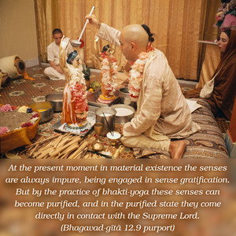

My dear Arjuna, O winner of wealth, if you cannot fix your mind upon Me without deviation, then follow the regulative principles of bhakti-yoga. In this way develop a desire to attain Me.


In this verse, two different processes of bhakti-yoga are indicated. The first applies to one who has actually developed an attachment for Kṛṣṇa, the Supreme Personality of Godhead, by transcendental love. And the other is for one who has not developed an attachment for the Supreme Person by transcendental love. For this second class there are different prescribed rules and regulations one can follow to be ultimately elevated to the stage of attachment to Kṛṣṇa.
Bhakti-yoga is the purification of the senses. At the present moment in material existence the senses are always impure, being engaged in sense gratification. But by the practice of bhakti-yoga these senses can become purified, and in the purified state they come directly in contact with the Supreme Lord. In this material existence, I may be engaged in some service to some master, but I don’t really lovingly serve my master. I simply serve to get some money. And the master also is not in love; he takes service from me and pays me. So there is no question of love. But for spiritual life, one must be elevated to the pure stage of love. That stage of love can be achieved by practice of devotional service, performed with the present senses.
This love of God is now in a dormant state in everyone’s heart. And, there, love of God is manifested in different ways, but it is contaminated by material association. Now the heart has to be purified of the material association, and that dormant, natural love for Kṛṣṇa has to be revived. That is the whole process.
To practice the regulative principles of bhakti-yoga one should, under the guidance of an expert spiritual master, follow certain principles: one should rise early in the morning, take bath, enter the temple and offer prayers and chant Hare Kṛṣṇa, then collect flowers to offer to the Deity, cook foodstuffs to offer to the Deity, take prasādam, and so on. There are various rules and regulations which one should follow. And one should constantly hear Bhagavad-gītā and Śrīmad-Bhāgavatam from pure devotees. This practice can help anyone rise to the level of love of God, and then he is sure of his progress into the spiritual kingdom of God. This practice of bhakti-yoga, under the rules and regulations, with the direction of a spiritual master, will surely bring one to the stage of love of God.